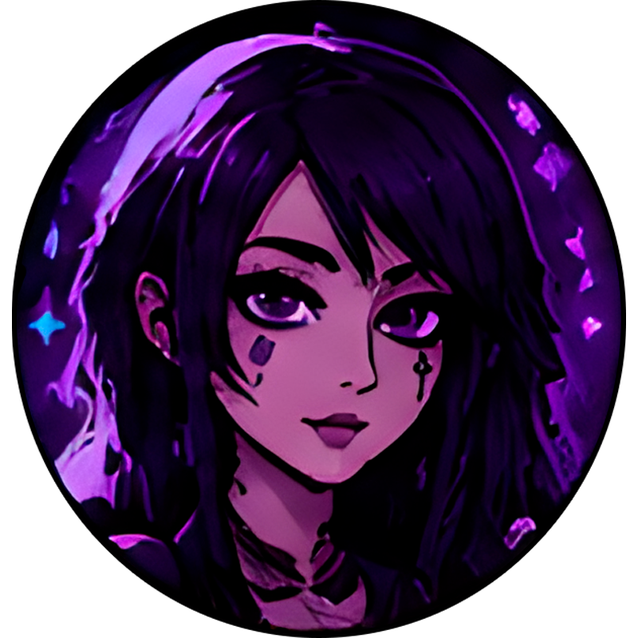

O renascimento do meu site pessoal
Sempre senti falta da internet dos anos 2000, onde cada página tinha a sua própria alma, cursores brilhantes e botões esquisitos. Este site é o meu manifesto contra páginas sem vida.

✦ Bem-vindo(a) ao meu recanto pessoal da web ✦
Um espaço caótico-organizado criado para guardar tudo que amo: devaneios em forma de texto, jogos clássicos, estética emo/dark, vídeos favoritos e companheiros de jornada.


Uma página inteira e imersiva só de joguinhos clássicos: Snake 99 Neon, Papa's Pizzeria e Tetris com emulador Ruffle!
▶ ENTRAR NO SALÃO DE JOGOS ➔Sempre senti falta da internet dos anos 2000, onde cada página tinha a sua própria alma, cursores brilhantes e botões esquisitos. Este site é o meu manifesto contra páginas sem vida.
Preto, roxo profundo e luzes neon. Aqui ficarão guardadas listas de coisas que me inspiram, análises de jogos indie, playlists e devaneios de madrugada.
✦ Uma vibe sonora para acompanhar sua visita ✦
✦ Clique em um companheiro para ver sua galeria de fotos exclusiva!